Listening visuals Cambridge 19Reviewed results: 122 confirmed issue records (86 duplicate pairs, 9 sequence inversions, 1 wrong-Part image, 26 clipped images); 23 suspected records. Counts overlap Parts/assets. Full reviewed CSV. Raw audit.json/findings.csv are detector output, not the final defect list. Fallback scope alone is not a defect. OCR ranges are incomplete hints.
All books · Cambridge 19: 16 Parts · exact current resolver outputCambridge 19 / Test 1 / Part 1
V0430:confirmed:duplicate_content
Q[1, 10]: 1, 2 [Part fallback]
#1 OCR Q[[1, 10]] · 1342×1895
Test_1_Original_Listening_PDF_Page_009.jpg
assets/public/060a2a2cec61cca2420b785744c9b720a717bcac0c8726abe75c59a28477414f.jpg
asset-060a2a2cec61cca2420b785744c9b720a717bcac0c8726abe75c59a28477414f#2 OCR Q[] · 1174×1175
Test_1_Part_1_Hinchingbrooke_Notes.png
assets/public/ecf404ffe6e58b4d08eeccdfccda6fe44641c42f6982add46e697c1b1e388ef5.png
asset-ecf404ffe6e58b4d08eeccdfccda6fe44641c42f6982add46e697c1b1e388ef5 Cambridge 19 / Test 1 / Part 2
V0432:confirmed:duplicate_content; C036:confirmed:clipped_source
Q[11, 15]: 1, 2, 3 [Part fallback]
Q[16, 20]: 1, 2, 3
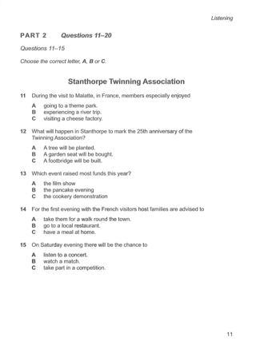
#1 OCR Q[[11, 20], [11, 15]] · 1342×1895
Test_1_Original_Listening_PDF_Page_010.jpg
assets/public/73fc50e59bfdb3902862c603837ec32d0ef372c1fac03e370c8f986be5a400a4.jpg
asset-73fc50e59bfdb3902862c603837ec32d0ef372c1fac03e370c8f986be5a400a4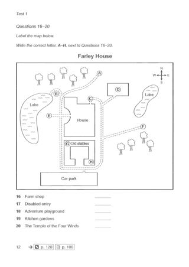
#2 OCR Q[[16, 20]] · 1342×1895
Test_1_Original_Listening_PDF_Page_011.jpg
assets/public/82649ba5ba479dac088aae18bcd700d7af5a19a373edcfcf168431e2f550bca5.jpg
asset-82649ba5ba479dac088aae18bcd700d7af5a19a373edcfcf168431e2f550bca5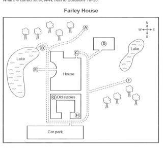
#3 OCR Q[] · 1167×1061
Test_1_Part_2_Farley_House_Map.png
assets/public/58b5984e68886afd388088a3d6f34ef06bae26b1f8d47925f4d9abd5818b4e5f.png
asset-58b5984e68886afd388088a3d6f34ef06bae26b1f8d47925f4d9abd5818b4e5fCambridge 19 / Test 1 / Part 3
No confirmed/candidate defect detected; not a visual PASS
Q[21, 22]: 1, 2 [Part fallback]
Q[23, 24]: 1, 2 [Part fallback]
Q[25, 30]: 1, 2 [Part fallback]
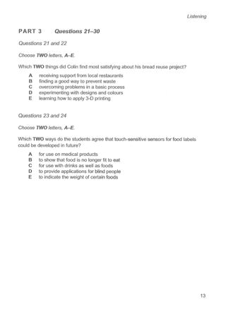
#1 OCR Q[[21, 30]] · 1342×1895
Test_1_Original_Listening_PDF_Page_012.jpg
assets/public/6f9d421b773f07d23e7a15f0f6895a922472be8d7f948da3ad99ee0ecb61da65.jpg
asset-6f9d421b773f07d23e7a15f0f6895a922472be8d7f948da3ad99ee0ecb61da65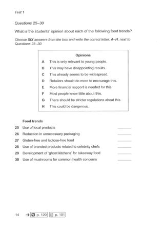
#2 OCR Q[[25, 30], [25, 30]] · 1342×1895
Test_1_Original_Listening_PDF_Page_013.jpg
assets/public/8ea3400aefd7ff82455df13dd8fff7625d8f3bb0a23b682b045bded5b468a6ad.jpg
asset-8ea3400aefd7ff82455df13dd8fff7625d8f3bb0a23b682b045bded5b468a6adCambridge 19 / Test 1 / Part 4
V0437:confirmed:duplicate_content; C039:confirmed:clipped_source
Q[31, 40]: 1, 2 [Part fallback]
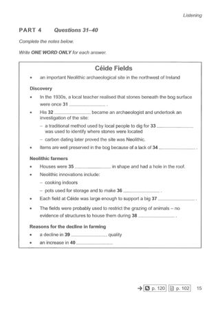
#1 OCR Q[[31, 40]] · 1342×1895
Test_1_Original_Listening_PDF_Page_014.jpg
assets/public/b47d4e1ee5240328e099372ce67ed003d38d1727a4103430b07cf8c1ee14179f.jpg
asset-b47d4e1ee5240328e099372ce67ed003d38d1727a4103430b07cf8c1ee14179f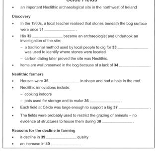
#2 OCR Q[] · 1167×1213
Test_1_Part_4_Ceide_Fields_Notes.png
assets/public/42a67736a48f1980c295a7eca33705289207b6ea8c10d7f991582b4461dbf36f.png
asset-42a67736a48f1980c295a7eca33705289207b6ea8c10d7f991582b4461dbf36fCambridge 19 / Test 2 / Part 1
V0439:confirmed:duplicate_content; V0440:confirmed:duplicate_content
Q[1, 6]: 1, 2, 3, 4
Q[7, 10]: 1, 2, 3, 4
#1 OCR Q[[1, 10], [1, 6]] · 1342×1895
Test_2_Original_Listening_PDF_Page_032.jpg
assets/public/299e453ae751d69896a7875173e5e498d3b2cf48a4f223a85ce28fa8f365a7cd.jpg
asset-299e453ae751d69896a7875173e5e498d3b2cf48a4f223a85ce28fa8f365a7cd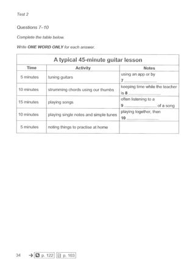
#2 OCR Q[[7, 10]] · 1342×1895
Test_2_Original_Listening_PDF_Page_033.jpg
assets/public/ac9d58bb9525d91c96eab96d750e95f904b0fffbafeaa093a3233b66432879eb.jpg
asset-ac9d58bb9525d91c96eab96d750e95f904b0fffbafeaa093a3233b66432879eb#3 OCR Q[] · 1167×626
Test_2_Part_1_Guitar_Group_Form.png
assets/public/2e6a47936aa21fe666429ca5269997e974bc2b6f79a93b1e66e7cbaa404c66f4.png
asset-2e6a47936aa21fe666429ca5269997e974bc2b6f79a93b1e66e7cbaa404c66f4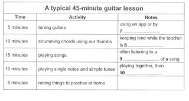
#4 OCR Q[] · 1167×625
Test_2_Part_1_Guitar_Lesson_Table.png
assets/public/74c650caa224034b483bd8121a49e4100f808819119ec41e92cbb78cf002bc3f.png
asset-74c650caa224034b483bd8121a49e4100f808819119ec41e92cbb78cf002bc3f Cambridge 19 / Test 2 / Part 2
No confirmed/candidate defect detected; not a visual PASS
Q[11, 16]: 1, 2 [Part fallback]
Q[17, 18]: 1, 2 [Part fallback]
Q[19, 20]: 1, 2 [Part fallback]
#1 OCR Q[[11, 20], [11, 16]] · 1342×1895
Test_2_Original_Listening_PDF_Page_034.jpg
assets/public/81be6261ea9d16e367cd44540da002d2e24e96a56f7e31a2f1b0a5563d881447.jpg
asset-81be6261ea9d16e367cd44540da002d2e24e96a56f7e31a2f1b0a5563d881447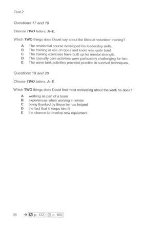
#2 OCR Q[] · 1342×1895
Test_2_Original_Listening_PDF_Page_035.jpg
assets/public/14759f1eaa0d002cf58dc0ed1222a1eb6ea1f946b0758b5e1efea4fb538bf1b4.jpg
asset-14759f1eaa0d002cf58dc0ed1222a1eb6ea1f946b0758b5e1efea4fb538bf1b4 Cambridge 19 / Test 2 / Part 3
No confirmed/candidate defect detected; not a visual PASS
Q[21, 24]: 1, 2 [Part fallback]
Q[25, 28]: 1, 2 [Part fallback]
Q[29, 30]: 1, 2 [Part fallback]
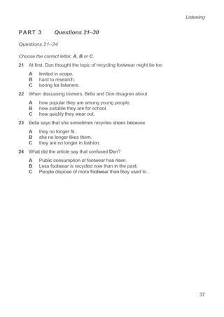
#1 OCR Q[[21, 30], [21, 24]] · 1342×1895
Test_2_Original_Listening_PDF_Page_036.jpg
assets/public/24ca1e7902decceec214946d8860f6bfaeb6d97130ea9a0e0a257d73192de62a.jpg
asset-24ca1e7902decceec214946d8860f6bfaeb6d97130ea9a0e0a257d73192de62a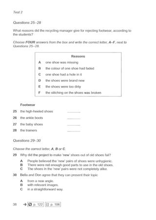
#2 OCR Q[[25, 28], [25, 28], [29, 30]] · 1342×1895
Test_2_Original_Listening_PDF_Page_037.jpg
assets/public/8e8447a8ecae480806dfac5663ab0356845ed184bcd74f728038057c2c1e71d7.jpg
asset-8e8447a8ecae480806dfac5663ab0356845ed184bcd74f728038057c2c1e71d7Cambridge 19 / Test 2 / Part 4
No confirmed/candidate defect detected; not a visual PASS
Q[31, 40]: 1, 2 [Part fallback]
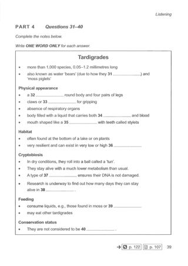
#1 OCR Q[[31, 40]] · 1342×1895
Test_2_Original_Listening_PDF_Page_038.jpg
assets/public/431541aca28b096670693a0fc86ec4c54d2d2f086901adaf51dd64019099a91a.jpg
asset-431541aca28b096670693a0fc86ec4c54d2d2f086901adaf51dd64019099a91a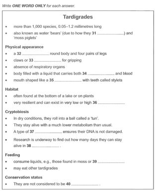
#2 OCR Q[] · 1167×1422
Test_2_Part_4_Tardigrades_Notes.png
assets/public/80a7d27012f5297a4214071a85c1c69208b96a0316e26b032109159807271966.png
asset-80a7d27012f5297a4214071a85c1c69208b96a0316e26b032109159807271966Cambridge 19 / Test 3 / Part 1
V0448:confirmed:duplicate_content; V0449:confirmed:duplicate_content; V0450:confirmed:order_inversion
Q[1, 6]: 1, 2, 3, 4 [Part fallback]
Q[7, 10]: 1, 2, 3, 4
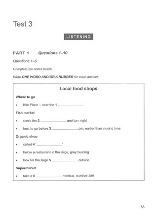
#1 OCR Q[[1, 10], [1, 6]] · 1342×1895
Test_3_Original_Listening_PDF_Page_054.jpg
assets/public/aee3070b476dd4d73aa3c7c3794a7a4289dc435e9e78596c9d32ac5e1b70210c.jpg
asset-aee3070b476dd4d73aa3c7c3794a7a4289dc435e9e78596c9d32ac5e1b70210c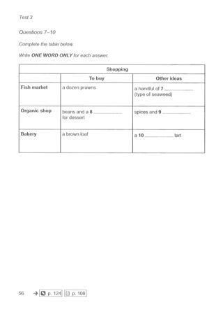
#2 OCR Q[[7, 10]] · 1342×1895
Test_3_Original_Listening_PDF_Page_055.jpg
assets/public/fc1395d4fe695adbe5c0a3ef758d1dfdcc345cb47bf120ca570defdb375b4ed4.jpg
asset-fc1395d4fe695adbe5c0a3ef758d1dfdcc345cb47bf120ca570defdb375b4ed4#3 OCR Q[[1, 6]] · 1167×1080
Test_3_Part_1_Local_Food_Shops_Notes.png
assets/public/4db70e91d4c332e6422adf5fea5417db299ff28d2630200dbe5f36ffb264adae.png
asset-4db70e91d4c332e6422adf5fea5417db299ff28d2630200dbe5f36ffb264adae#4 OCR Q[] · 1167×682
Test_3_Part_1_Shopping_Table.png
assets/public/7de1e37609e9dfb592c267c47150990065cd0e797fef509d99d9c70c02e97fcd.png
asset-7de1e37609e9dfb592c267c47150990065cd0e797fef509d99d9c70c02e97fcdCambridge 19 / Test 3 / Part 2
No confirmed/candidate defect detected; not a visual PASS
Q[11, 16]: 1, 2 [Part fallback]
Q[17, 18]: 1, 2 [Part fallback]
Q[19, 20]: 1, 2 [Part fallback]
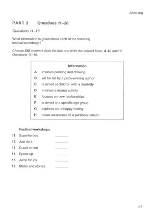
#1 OCR Q[[11, 20], [11, 16], [11, 16]] · 1342×1895
Test_3_Original_Listening_PDF_Page_056.jpg
assets/public/14a83d0a73ad1056c19b03b78dbc0e64d3a6aa826fdc674c3865791d61777c3a.jpg
asset-14a83d0a73ad1056c19b03b78dbc0e64d3a6aa826fdc674c3865791d61777c3a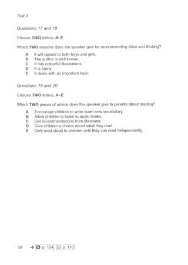
#2 OCR Q[] · 1342×1895
Test_3_Original_Listening_PDF_Page_057.jpg
assets/public/eaacff16b9447f757bdd3fdd544a37dc7625787e61577e006f66545b293e10b5.jpg
asset-eaacff16b9447f757bdd3fdd544a37dc7625787e61577e006f66545b293e10b5Cambridge 19 / Test 3 / Part 3
No confirmed/candidate defect detected; not a visual PASS
Q[21, 25]: 1, 2, 3 [Part fallback]
Q[26, 30]: 1, 2, 3
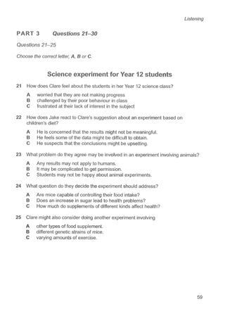
#1 OCR Q[[21, 30], [21, 25]] · 1342×1895
Test_3_Original_Listening_PDF_Page_058.jpg
assets/public/6c030ba222637ca509b61b7f68572e87fc723bdae671a1163ece8bcb67f8c6bf.jpg
asset-6c030ba222637ca509b61b7f68572e87fc723bdae671a1163ece8bcb67f8c6bf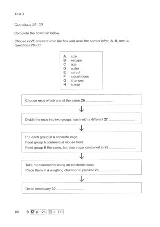
#2 OCR Q[[26, 30]] · 1342×1895
Test_3_Original_Listening_PDF_Page_059.jpg
assets/public/c603b260315f1d0921a8cec32999d809ce6f8522381643831e85102b44395ebe.jpg
asset-c603b260315f1d0921a8cec32999d809ce6f8522381643831e85102b44395ebe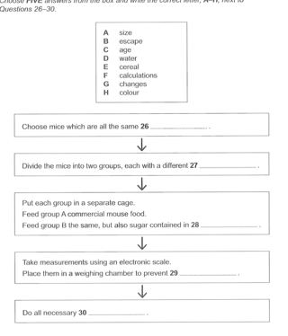
#3 OCR Q[[26, 30]] · 1134×1327
Test_3_Part_3_Mice_Experiment_Flowchart.png
assets/public/41ae9de8b2975267753ffc97d0a2be18ad0361a5bb8cbba6c95ccbaf28a996df.png
asset-41ae9de8b2975267753ffc97d0a2be18ad0361a5bb8cbba6c95ccbaf28a996dfCambridge 19 / Test 3 / Part 4
No confirmed/candidate defect detected; not a visual PASS
Q[31, 40]: 1, 2 [Part fallback]
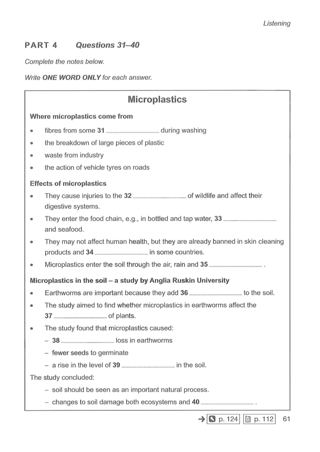
#1 OCR Q[[31, 40]] · 1342×1895
Test_3_Original_Listening_PDF_Page_060.jpg
assets/public/cbe6c3e4f1a9dd4d3f074fd6ef59b4946e161ac6fd65b6801fac77900b1b73eb.jpg
asset-cbe6c3e4f1a9dd4d3f074fd6ef59b4946e161ac6fd65b6801fac77900b1b73eb#2 OCR Q[] · 1167×1402
Test_3_Part_4_Microplastics_Notes.png
assets/public/5290f384c428e264f644a31eca4e27452110e5b03f534220850fc3066dc1eb43.png
asset-5290f384c428e264f644a31eca4e27452110e5b03f534220850fc3066dc1eb43Cambridge 19 / Test 4 / Part 1
V0457:confirmed:duplicate_content; V0458:confirmed:duplicate_content
Q[1, 6]: 1, 2, 3 [Part fallback]
Q[7, 10]: 1, 2, 3
#1 OCR Q[[1, 10], [1, 6], [7, 10]] · 1342×1895
Test_4_Original_Listening_PDF_Page_077.jpg
assets/public/25bf5aa1fc4e763387d238a6bb942b3f0246078b0df2654ebfef965cb79a957e.jpg
asset-25bf5aa1fc4e763387d238a6bb942b3f0246078b0df2654ebfef965cb79a957e#2 OCR Q[] · 1167×549
Test_4_Part_1_First_Day_At_Work_Notes.png
assets/public/ec20d1dc3789853b1db5ec11b7ea3ca61d74731d1732e527271a53abf45d8215.png
asset-ec20d1dc3789853b1db5ec11b7ea3ca61d74731d1732e527271a53abf45d8215#3 OCR Q[[7, 10]] · 1167×644
Test_4_Part_1_Responsibilities_Table.png
assets/public/7e391a6578b2a04d9c20333dcde9227a3c66f86e2e7a6f0ee13be67598c6ce97.png
asset-7e391a6578b2a04d9c20333dcde9227a3c66f86e2e7a6f0ee13be67598c6ce97 Cambridge 19 / Test 4 / Part 2
No confirmed/candidate defect detected; not a visual PASS
Q[11, 12]: 1, 2 [Part fallback]
Q[13, 14]: 1, 2 [Part fallback]
Q[15, 18]: 1, 2 [Part fallback]
Q[19, 20]: 1, 2 [Part fallback]
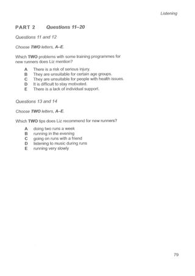
#1 OCR Q[[11, 20]] · 1342×1895
Test_4_Original_Listening_PDF_Page_078.jpg
assets/public/e585c7ab07e377ee21e7435e053b9e42770f8605c00e0d83e23a3d51605254f0.jpg
asset-e585c7ab07e377ee21e7435e053b9e42770f8605c00e0d83e23a3d51605254f0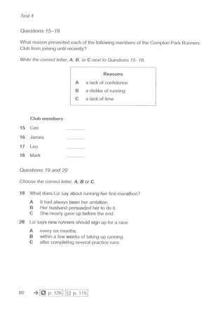
#2 OCR Q[[15, 18]] · 1342×1895
Test_4_Original_Listening_PDF_Page_079.jpg
assets/public/e9342d1de45198900cc2af4d85095cdfb8ec876cf4f44e46e363f6a2555af1d1.jpg
asset-e9342d1de45198900cc2af4d85095cdfb8ec876cf4f44e46e363f6a2555af1d1Cambridge 19 / Test 4 / Part 3
No confirmed/candidate defect detected; not a visual PASS
Q[21, 25]: 1, 2 [Part fallback]
Q[26, 30]: 1, 2 [Part fallback]
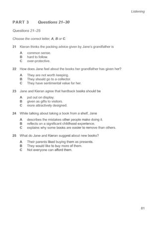
#1 OCR Q[[21, 30], [21, 25]] · 1342×1895
Test_4_Original_Listening_PDF_Page_080.jpg
assets/public/9a5536f929263d00488bd14b75220f3fd0bcd782882ce21985d22d0f8ccf2afb.jpg
asset-9a5536f929263d00488bd14b75220f3fd0bcd782882ce21985d22d0f8ccf2afb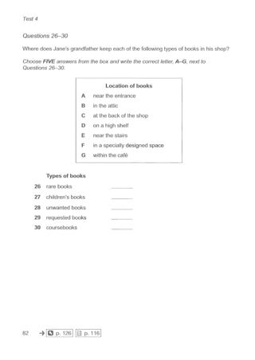
#2 OCR Q[[26, 30], [26, 30]] · 1342×1895
Test_4_Original_Listening_PDF_Page_081.jpg
assets/public/4ab104f76d32efaceef91c0a4ff3841b26d77a5e8701d02f4db22a8831c90357.jpg
asset-4ab104f76d32efaceef91c0a4ff3841b26d77a5e8701d02f4db22a8831c90357Cambridge 19 / Test 4 / Part 4
No confirmed/candidate defect detected; not a visual PASS
Q[31, 40]: 1, 2 [Part fallback]
#1 OCR Q[[31, 40]] · 1342×1895
Test_4_Original_Listening_PDF_Page_082.jpg
assets/public/c6fc909bb26bc35802dfcf118c0e46b5e2c50c74e9c5ecf91c3357aa313113f7.jpg
asset-c6fc909bb26bc35802dfcf118c0e46b5e2c50c74e9c5ecf91c3357aa313113f7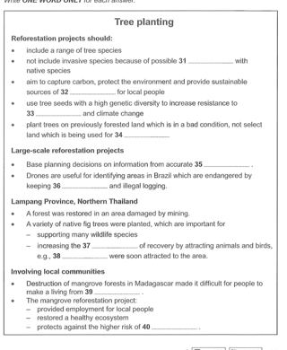
#2 OCR Q[] · 1167×1421
Test_4_Part_4_Tree_Planting_Notes.png
assets/public/808ef20b048fa3422175c2371882dd9cf282096f599892dfbd96b6e955a51f6f.png
asset-808ef20b048fa3422175c2371882dd9cf282096f599892dfbd96b6e955a51f6f